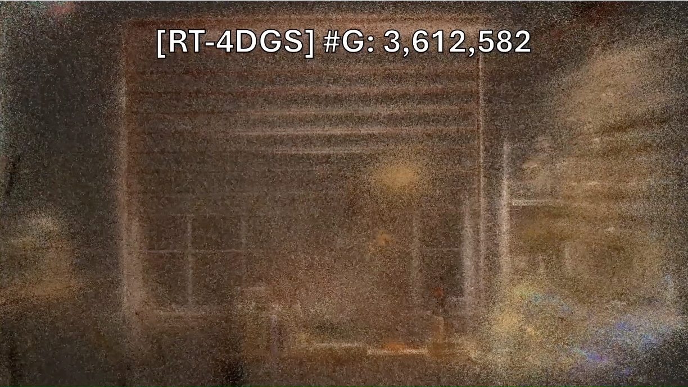
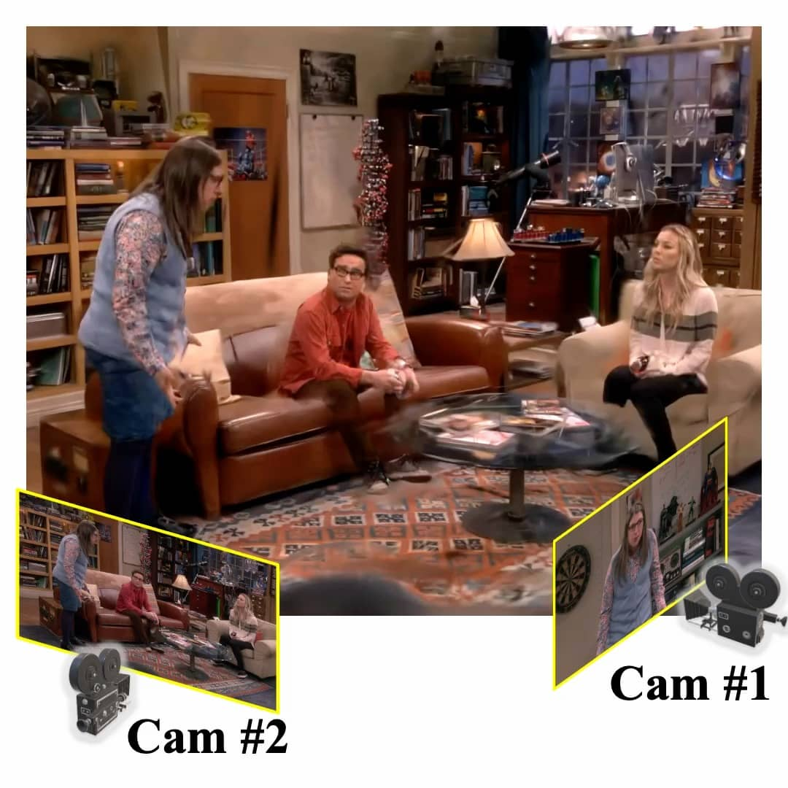

|
Sangmin Kim I am currently a Ph.D. student in Artificial Intelligence at Seoul National University, advised by Jaesik Park. I received my B.S. degree in Computer Science and Engineering from Chung-Ang University with honors of magna cum laude in 2024. My research interests are in 3D computer vision and deep learning. Especially, I am interested in computer vision applications for post-production and visual contents. |

|
üö© News |
|
üìö Publications |
|  |
Optimized Minimal 4D Gaussian Splatting
Minseo Lee*, Byeonghyeon Lee*, Lucas Yunkyu Lee, Eunsoo Lee, Sangmin Kim, Seunghyeon Song, Joo Chan Lee, Jong Hwan Ko, Jaesik Park, Eunbyung Park arXiv, 2025 paper / code A framework that constructs a compact set of salient Gaussians capable of faithfully representing 4D Gaussian models, reducing state-of-the-art model sizes by over 60%. |
|  |
ShowMak3r: Compositional TV Show Reconstruction
Sangmin Kim, Seunguk Do, Jaesik Park CVPR, 2025 paper / code A comprehensive pipeline that reconstructs the dynamic radiance field from TV shows, enabling viewpoint editing like how the video clip is made in a production control room. |
üî¨ Work Experience |
||
|

üèÜ Honors and Awards |
|
|
Website's source code is referenced from Jon Barron's. |